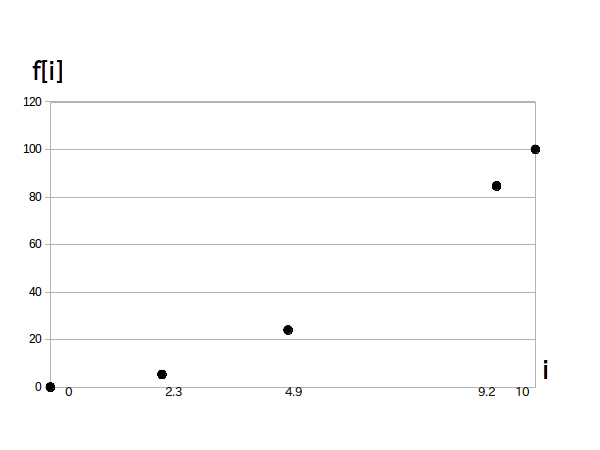

ディジタル信号は関数 $f[i]$ の形で表されます。
関数 $f[i]$ の変数 $i$ の事を $f[i]$ の「独立変数」と言って場所や時点などに相当します。
この $i$ が取り得る値の範囲の事を $f[i]$ の「定義域」と言います。
一方 $f[i]$ そのものが取り得る値の範囲の事を$f[i]$の「値域」といいます。
なお $f[i]$ の値は実数でも複素数でもどちらでも OK です。
さて、ディジタル信号の定義は文献によって微妙に違うのですが、一般的には独立変数 $i$ が離散的な値を取るとき、 この $f[i]$ のことを「ディジタル信号」または「ディジタル信号列」といいます。
ここで離散値とは $i=0,\ 1,\ 2$ のような整数値や $i=0.10,\ 0.11,\ 0.12$ のような飛び飛びの実数値のことです。
例として図1にディジタル信号 $f[i] = i^2, ( i = 0,\ 1, \cdots,\ 10) $ のグラフを示します。
また上で書いたように $i$ は必ずしも整数である必要はありませんので、例えば $i = 0, \ 2.3, \ 4.9, \ 9.2, \ 10$ とすると図2の様なグラフになります。
